Индекс Гостемании — показатель удовлетворённости Гостя последним посещением. Рассчитывается на основе оценок, которые Гости ставят в мобильном приложении после заказа (от 1 до 5 звёзд).
В этом модуле два раздела. Выбери тот, который нужен сейчас, или изучай по порядку.
Списания в PLS, Аксапте, детализация ДОБРО и комплементы в KingPos — чтобы видеть причины жалоб и корректировать работу команды.
→Средняя оценка Гостя в мобильном приложении по чистоте, скорости, вежливости, точности, вкусу и температуре — чтобы понимать общий уровень сервиса.
→Списания в PLS, Аксапте, детализация ДОБРО и комплементы в KingPos — чтобы видеть причины жалоб и корректировать работу команды.
Выбери любой отчёт — все разделы доступны сразу.
Оперативно показывает, какие блюда списаны по причине «ДОБРО: замена по жалобе Гостя» за смену.
Детализация всех списаний за любой прошедший день, в том числе по причине «ДОБРО».
Полная выгрузка каждого списания: дата, время, блюдо, себестоимость.
Количество комплементов, причины, кто пробил, время — данные из KingPos и рассылка на почту для ТУ, ОД, ИД.
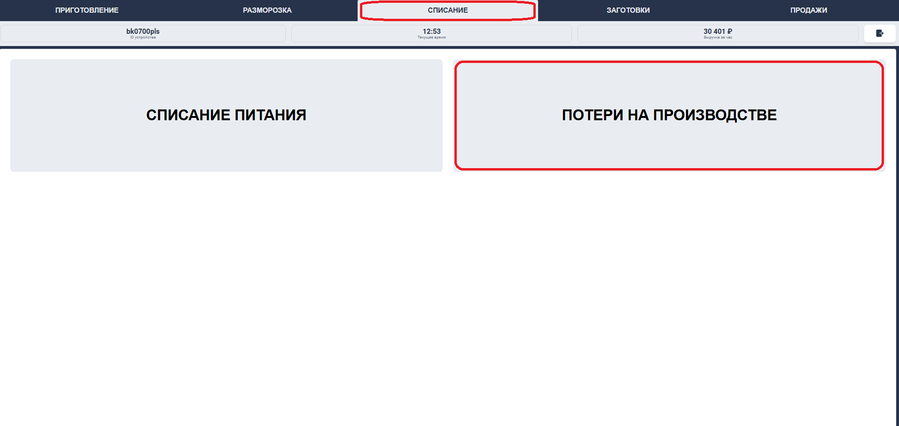
Шаг 1 — Откройте PLS, перейдите во вкладку «Списание»
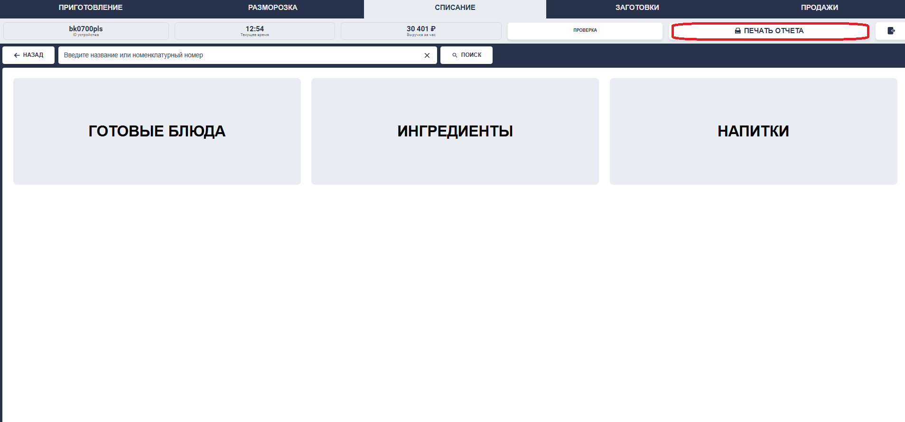
Шаг 2 — Выберите «Потери на производстве»
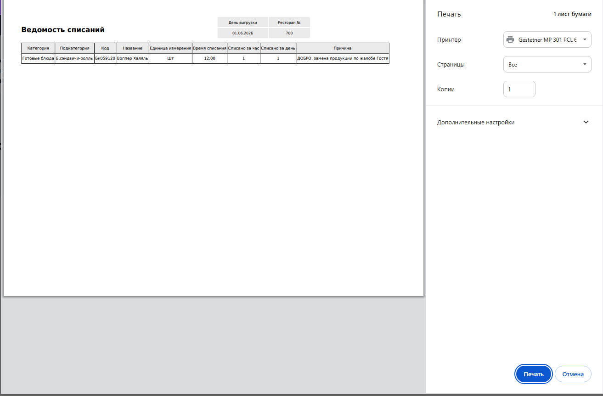
Шаг 3 — Нажмите «Печать отчёта»
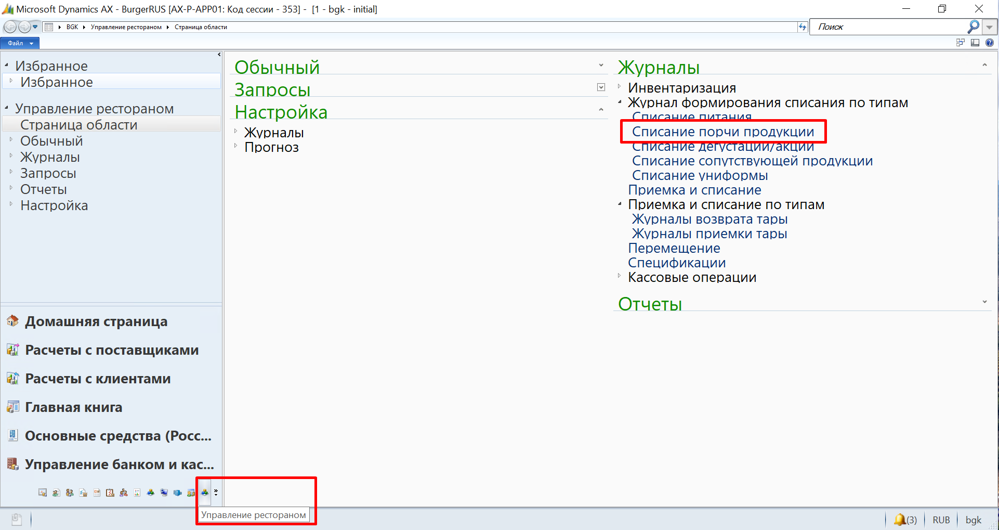
Шаг 1–2 — Журнал «Списание порчи продукции», фильтр «Разнесено»
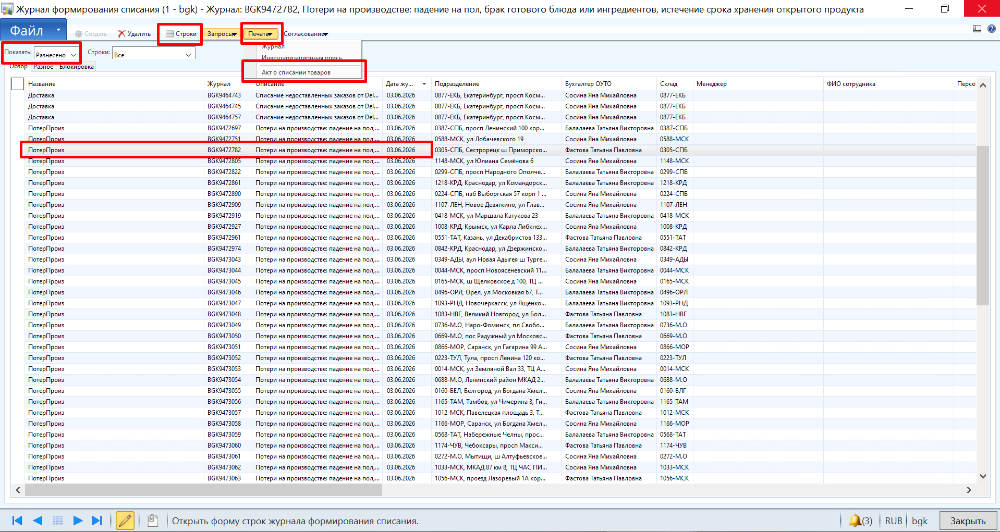
Шаг 3 — Выберите журнал «ПотерПроизв» за нужный день
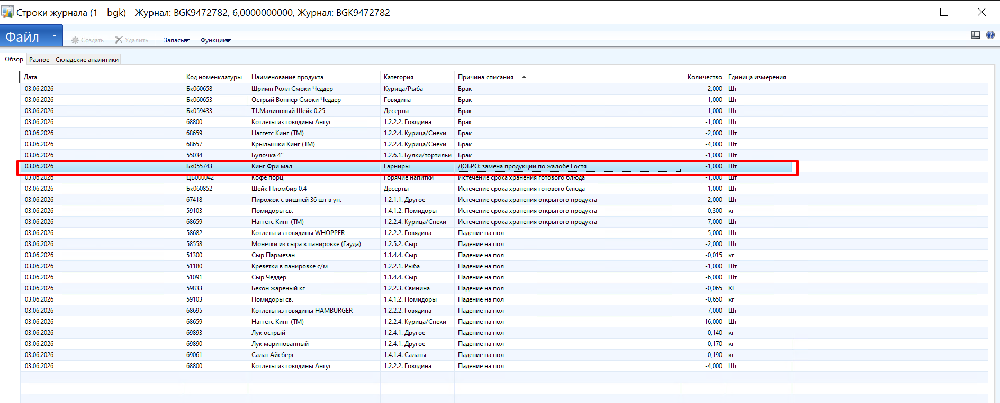
Шаг 4 — Откройте «Строки»
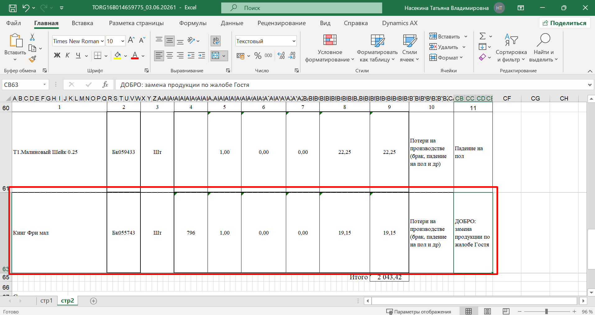
Шаг 5 — Печать → «Акт о списании товаров» (стр. 2) → выгрузка в Excel
На что обратить внимание
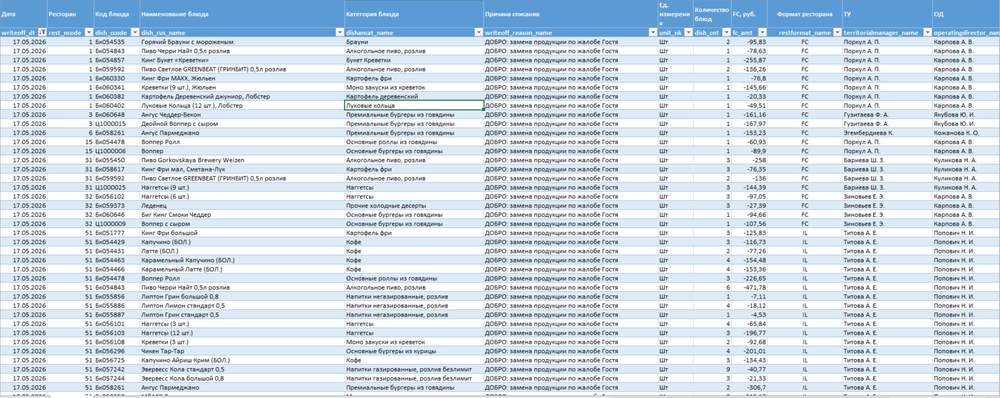
Нажмите на заголовок, чтобы развернуть шаг.
Ресторан списал 4 позиции по «ДОБРО» 2 мая (выходной день).
На первый взгляд может показаться, что списание случайное (человеческий фактор, ошибочно выбрана категория).
Но если копнуть глубже: в тот день на борту был стажёр, которого поставили без ТН (ТН не было в расписании). Ошибки в сборке не корректировались, часть блюд пришлось переделывать по жалобам Гостей. Аналогичная ситуация повторилась 20 апреля.
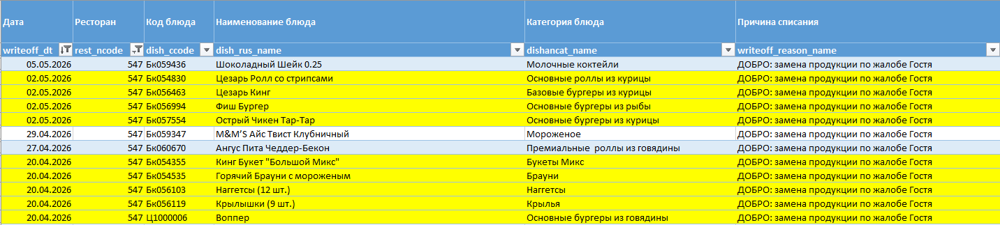
Запрашиваем ОС, смотрим расписание и камеры. Выясняем: стажёр работал без ТН, его действия никто не проверял.
Как найти: KingPos → Отчёты → «Отчёт по комплементам»
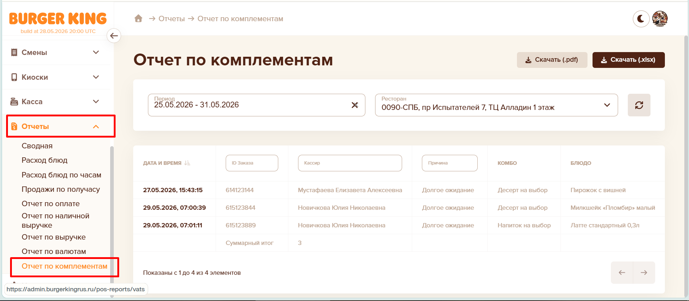
Отчёт по комплементам в KingPos
S:\Гостевой_сервис\Комплементы и замены
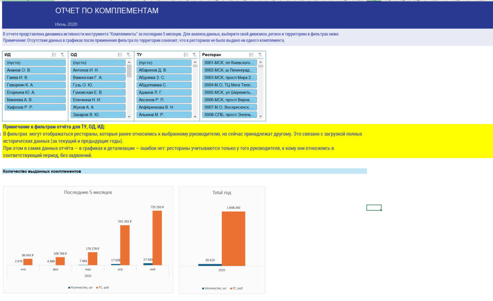
Отчёт-рассылка по комплементам (стр. 1)
нажмите, чтобы увеличить
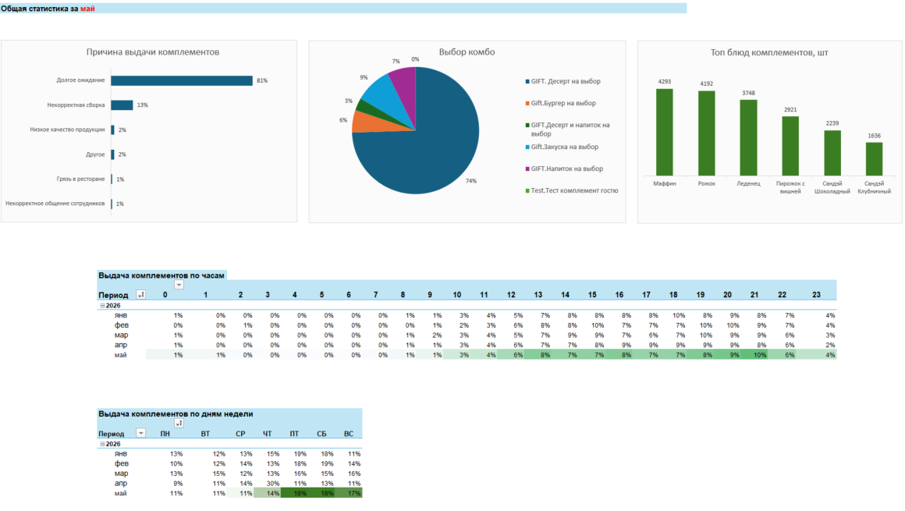
Отчёт-рассылка по комплементам (стр. 2)
нажмите, чтобы увеличить
Показатель удовлетворённости Гостя последним посещением
Индекс Гостемании — показатель удовлетворённости Гостя последним посещением. Рассчитывается на основе оценок, которые Гости ставят в мобильном приложении после заказа (от 1 до 5 звёзд).
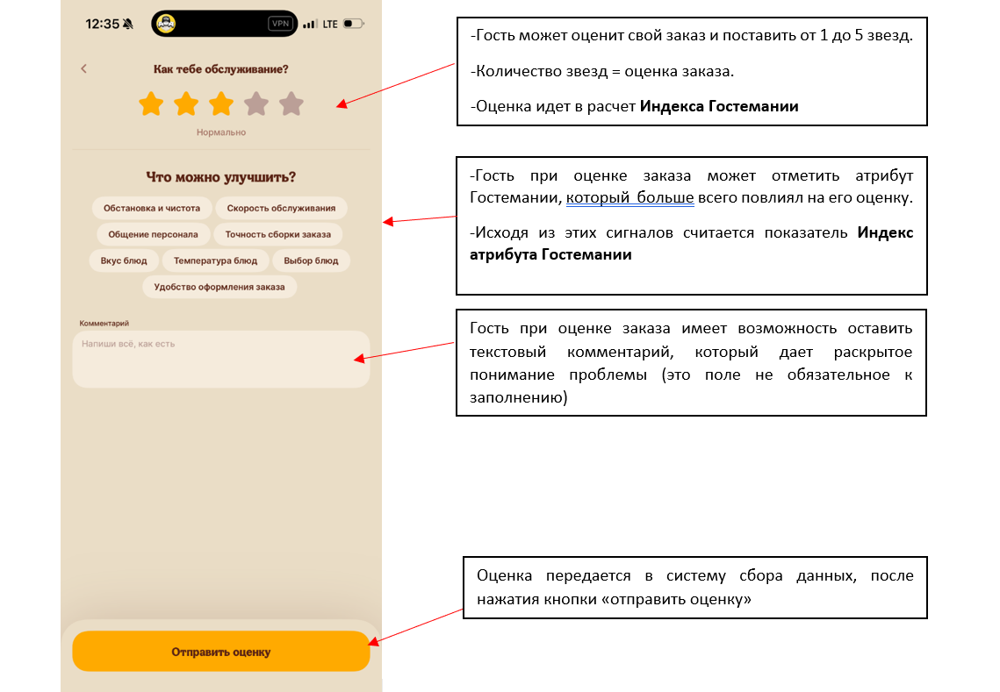
Гость ставит оценку в мобильном приложении
Нажмите на карточку, чтобы увидеть ответ.
Что влияет на Индекс Гостемании?
Индекс оценивает только то, что ты реально можешь улучшить. Остальное системой отсеивается — чтобы оценка была честной.
Еженедельный дайджест «Индекс Гостемании» приходит на почту ТУ, ОД, ИД. Также находится по ссылке:
S:\Гостевой_сервис\тест_на_50_ресторанов\Ежедневный_показатель_CSI
Отчёт содержит:
Динамика Индекса Гостемании
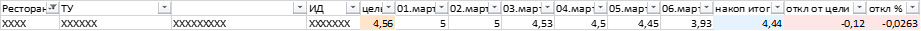
Оценки, атрибуты Гостемании, текст отзывов
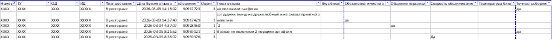
Комплементы и замены ДОБРО
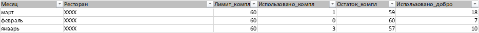
Нажмите на каждый шаг, чтобы увидеть пример из практики.
Разбираем отчёт с помощью сводной таблицы. В отчёте видим: явная проблема — точность сборки, а также по 7 отзывов на категории «температура» и «вкус» (оба про качество продукта).
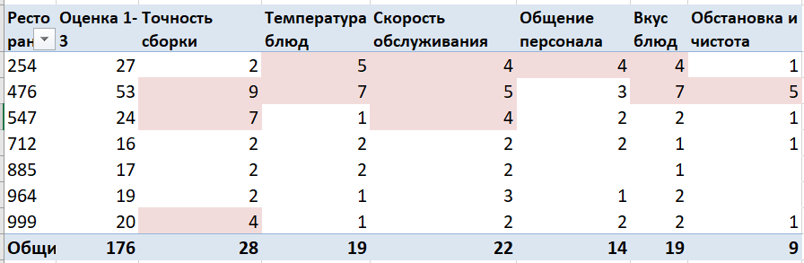
Выбираем топ самых западающих атрибутов.
Для ресторана X приоритеты — точность сборки и качество продукта.
Составляем план действий (Action plan) — что конкретно меняем.
Через неделю смотрим динамику:
Если индекс падает по конкретному атрибуту — это сигнал. Сначала проверь типовые причины (они повторяются чаще всего). Если причины не подходят — нужно идти в углублённый анализ.
| Атрибут индекса | Блок ДОС+ | Что проверить в первую очередь |
|---|---|---|
| Чистота в зале | Чистота и оборудование | Достаточно ли сотрудников в зале (расписание, ITPH)? |
| Выходят ли ночные уборщики по графику? | ||
| Принимает ли утренний менеджер ночную уборку? | ||
| Есть ли текущие открытые задачи по клинингу в чек-листе? | ||
| Скорость обслуживания | Продажи / Продукт | Соблюдаются ли тайминги приготовления на кухне? |
| Достаточно ли сотрудников (расписание, ITPH)? | ||
| Нет ли перегрузки на сборке (анализ ITPH)? | ||
| Всё ли оборудование исправно и включено? | ||
| Есть ли подготовка к пикам? Сотрудники не ходят на перерыв в пики? | ||
| Общение персонала | Люди | Проходили ли сотрудники обучение по ДОБРО? |
| Проводятся ли ролевые игры на смене? | ||
| Нет ли текучки, которая влияет на настрой команды? | ||
| Как менеджер смены личным примером задаёт тон? | ||
| Точность сборки заказа | Продукт | Все ли ингредиенты в наличии (нет ли стоп-позиций)? |
| Обучены ли сотрудники сборке заказов? | ||
| Обучены ли сотрудники кухни? | ||
| Не ошибся ли сборщик из-за усталости (график)? | ||
| Вкус блюд | Продукт | Свежие ли продукты (проверка сроков годности, ротации)? |
| Соблюдается ли технология приготовления? | ||
| Нет ли нарушений в хранении (температурные режимы)? | ||
| Нет ли нарушений при приёме поставок? | ||
| Температура блюда | Продукт | Соблюдается ли время от готовки до выдачи? |
| Исправно ли тепловое оборудование? (бин, станция картофеля) | ||
| Не простаивает ли блюдо на выдаче из-за нехватки курьеров / сотрудников? | ||
| Соблюдается ли выдержка продуктов? |
Что же делает каждый сотрудник АУП?
Нажмите на карточку, чтобы увидеть обязанности.
Менеджер
Менеджер
Директор
Директор
Территориальный управляющий
Территориальный управляющий
Смотри на отчёты по заменам, комплементам и Индекс Гостемании как на подсказки. Они прямо говорят, где ресторан в порядке, а где пора что‑то менять.
Реагируй на сигналы, обсуждай с командой, планируй действия — и гостевой опыт будет расти.
Доверяй своим решениям и помни: каждый инцидент, правильно решённый на месте, укрепляет бренд.